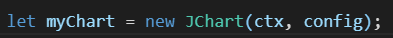

JChart Constructor
# 생성자
와 같이 new 키워드를 이용하여 생성한다. 
- new 키워드를 직접적으로 명시하는 것을 권장.
생성자
JChart(CanvasRenderingContext2D, Object);
리턴 : JChart Object
인자 :
(필수) CanvasRenderingContext2D :드로잉 컨텍스트 CanvasRenderingContext2D
(권장) Object : 설정 값 ( config )
JChart(CanvasRenderingContext2D, Object);
리턴 : JChart Object
인자 :
(필수) CanvasRenderingContext2D :드로잉 컨텍스트 CanvasRenderingContext2D
(권장) Object : 설정 값 ( config )